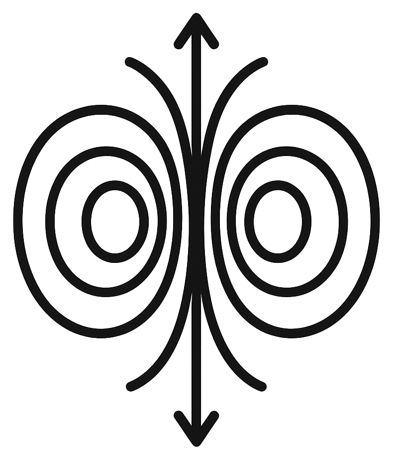

Conectando con el archivo vivo.
La publicación más reciente aparecerá aquí automáticamente.

La Central BajaInfraestructura cultural independiente · Murcia
La Central Baja es una nave de 605 m² para producir, investigar, ensayar, reunirse y mostrar trabajo contemporáneo sin convertir cada proceso en un evento inmediato.
01 — Ahora
Procesos, pruebas, montajes, encuentros y documentos todavía abiertos.
La publicación más reciente aparecerá aquí automáticamente.
A / 01
Módulos para artistas y colectivos con acceso continuado a recursos, contexto profesional y zonas compartidas.
Consultar disponibilidad ↗A / 02
Montaje, ensayo, formación, exhibición, escucha, reunión y experimentación.
Proponer uso ↗A / 03
Un dispositivo expositivo propio para proyectos site-specific y procesos de mediación.
Abrir proyecto ↗02 — Prácticas
Artistas, colectivos y agentes que producen desde La Central Baja.
Cargando prácticas…
03 — Posición
La Central Baja nace de una carencia concreta: faltan lugares intermedios donde el trabajo artístico pueda probar, fallar, producir y adquirir continuidad antes de convertirse en evento.
La programación pública es una consecuencia del proceso, no una decoración de la infraestructura.
04 — Espacio
Una arquitectura que cambia según el proceso y no obliga a que todo suceda de la misma manera.
05 — Archivo vivo
Documentos, imágenes, notas y rastros generados desde el espacio.